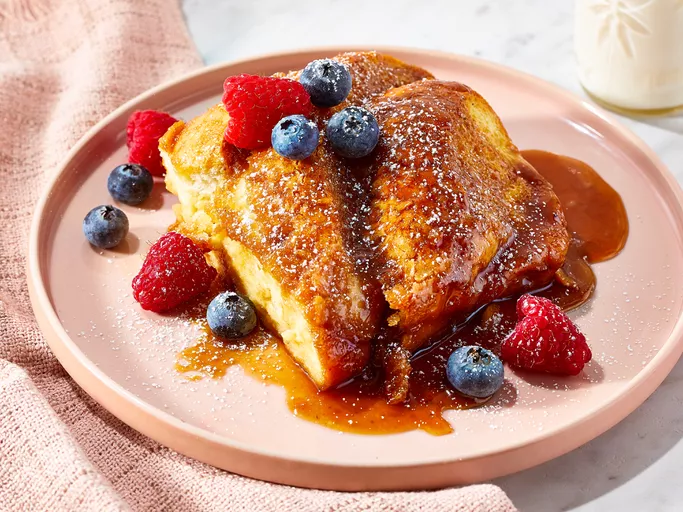

French Toast

What is French Toast ?
French toast is a dish of sliced bread soaked in beaten eggs and often milk or cream, then pan-fried.
Alternative names and variants include eggy bread, Bombay toast, gypsy toast, and poor knights.
Oddly enough, French toast did not originate in France.
In fact, French toast's origins trace back all the way to ancient Rome!
A Roman cookbook called Apicius, dating from at least as far back as the 5th century C.E., describes a recipe for bread soaked in milk and beaten eggs then fried and served with honey.
Ingredients :
- 2 eggs
- 60 mg of milk
- 4 gr of sugar
- 1 gr of cinnamon
- a pinch of salt
- a spalsh of vanilla extract
- nutmeg
- white loaf bread
- Butter
Steps :
-
Prepare mixture to dip bread in.
- Put 2 eggs into a bowl and mix in
a splash of vanilla extract
scrape the nutmeg into the whole
- whisk until a liquid texture is achieved
- Add butter to a pan
- Dip your slices of bread into the mixture and add them to your pan
- Flip your slices when first side is golden brown (1 to 2 minutes)
- Add butter between each slice
- Plate, add maple syrup and dust some powdered sugar over the top
Then add the fruit of your choice
If completely lost ...
3 ways to make perfect French Toast